北見市春光町の市営団地に三菱エアコン取付｜換気口転用・コンセント増設工事
お客様がご自身で購入された三菱エアコンの取付工事です。市営住宅にはエアコン用の配管穴がなかったため、既設の換気口を撤去して配管穴として転用。エアコン専用コンセントもなかったため、分電盤から専用回路を新たに引き、ベランダにプラブロックで室外機を設置しました。
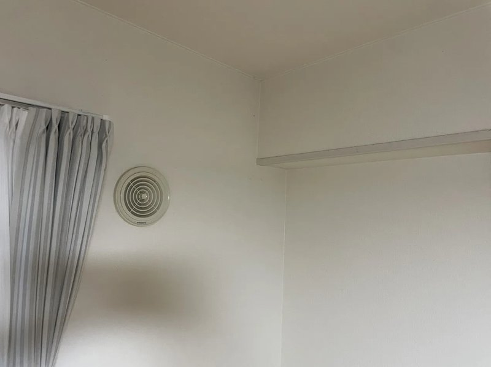

施工概要
| 施工日 | 2025年8月 |
|---|---|
| 地域 | 北海道北見市春光町 |
| 建物 | 市営団地 |
| 工事内容 | エアコン取付工事（お客様支給品） + 専用回路増設 |
| 機種 | 三菱 MSZ-GV2825-W（10畳用・お客様支給） |
| 追加工事 | 換気口撤去・配管穴転用、分電盤からの専用回路増設 |
| 工期 | 1日 |
お客様のご要望
「エアコンは自分で購入したので、取付工事だけお願いしたい。市営住宅の団地なので、設置できるかどうかも含めて相談したい。」
施工のポイント
近隣住戸の設置状況を事前に確認
市営住宅の団地ではエアコン用の配管穴があらかじめ開いていないことが多く、今回のお部屋も同様でした。そこで同じ団地内の近隣住戸でエアコンがどのように設置されているかを確認し、施工方法の参考にしました。団地の構造や規約を踏まえた上で、最適な設置方法を決定しています。
既設の換気口を撤去して配管穴に転用
壁にはエアコン用の穴がない代わりに、空気取り入れ用の換気口が設置されていました。この換気口を撤去して配管穴として転用する方法を採用。ただし、換気口はコーキング材でびっちり固定されており、内壁・外壁ともに引き抜くのに苦労しました。慎重に作業を進め、無事に換気口を撤去して配管を通すことができました。
木板加工とコーキングで気密・防水処理
換気口を撤去した穴はエアコン配管より大きいため、そのままでは隙間から外気や雨水が侵入してしまいます。白い木の板をノコギリで配管の通る形状に加工し、穴をふさぐように固定。配管周りはウレタンフォームとコーキングで気密・防水処理を行い、仕上がりもきれいに収めました。
分電盤から専用回路を新設
新規でのエアコン設置のため、エアコン専用のコンセントがありませんでした。エアコンは消費電力が大きく、他の家電と同じ回路で使うとブレーカーが落ちる原因になります。そのため、分電盤から直接エアコン専用の回線を新たに引く電気工事も並行して実施しました。
施工の様子
ビフォー・アフター
室内機
室外機
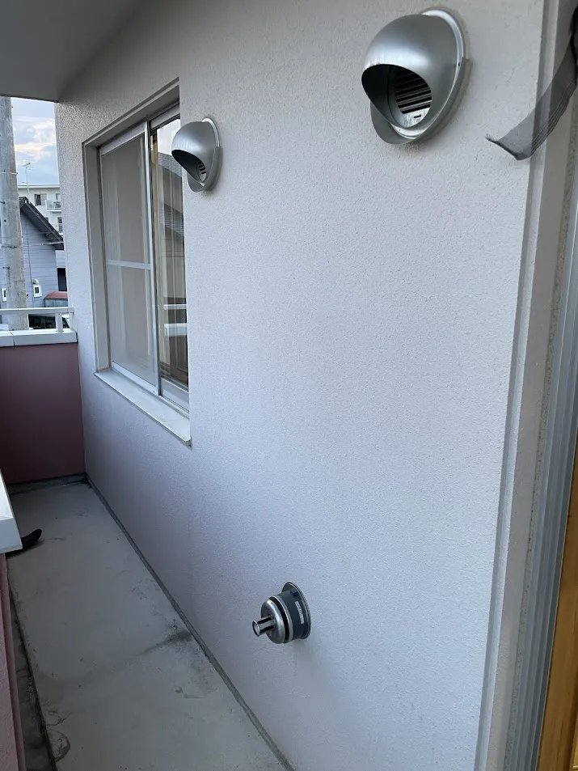
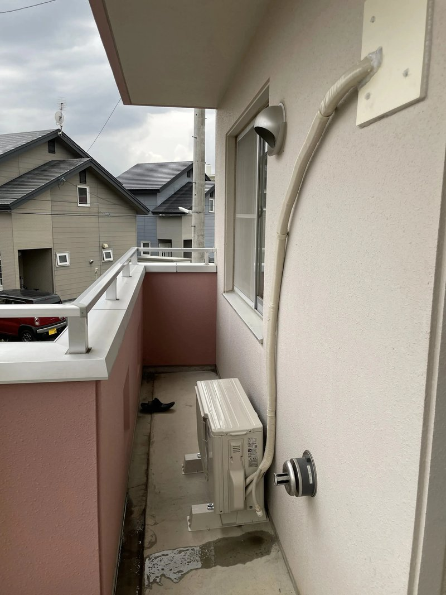
配管穴（換気口の転用）
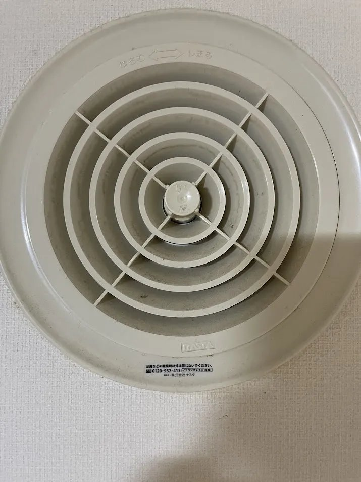
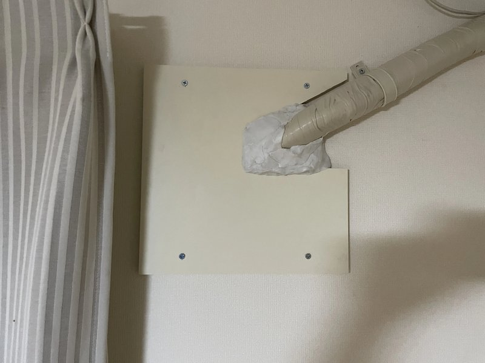
施工工程
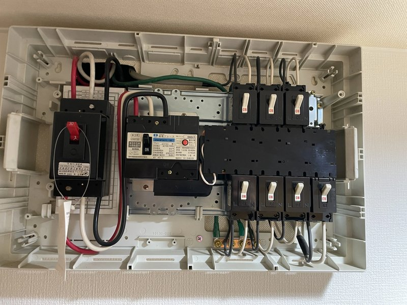
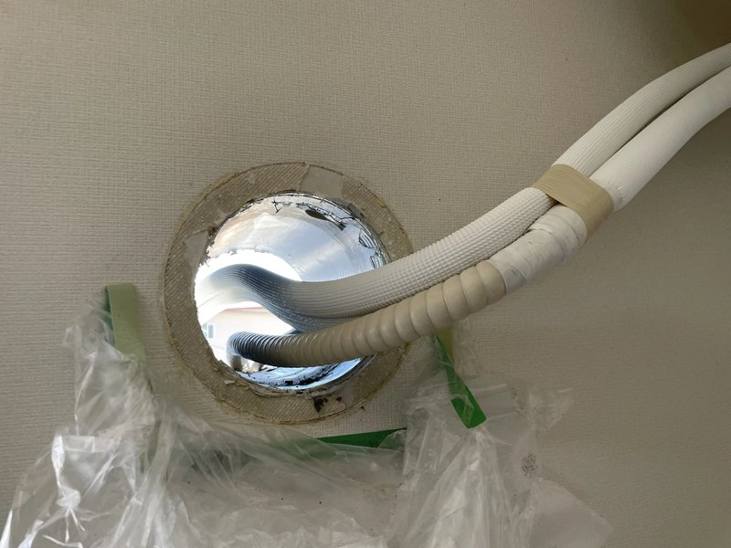
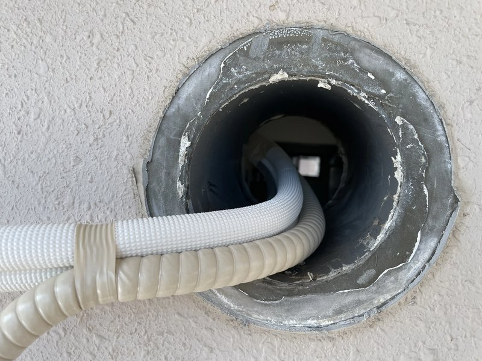
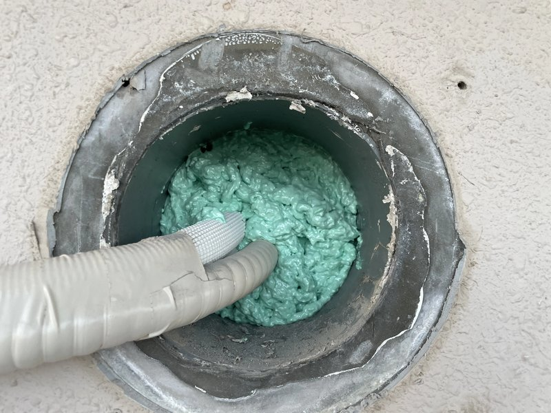
完成写真
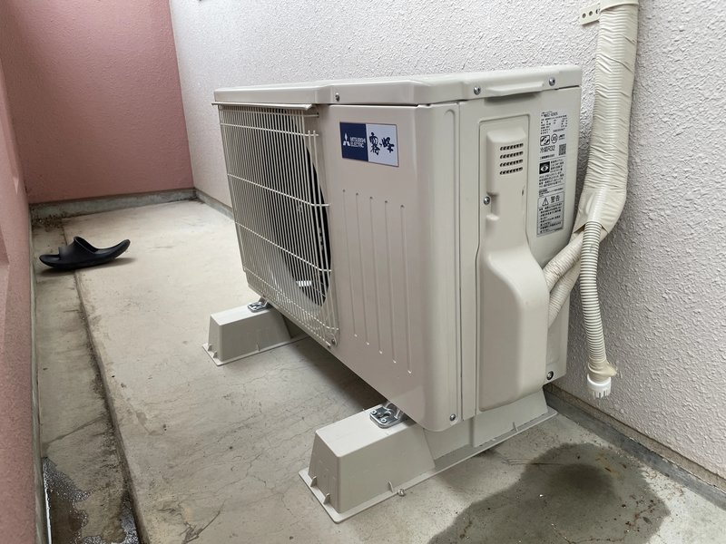
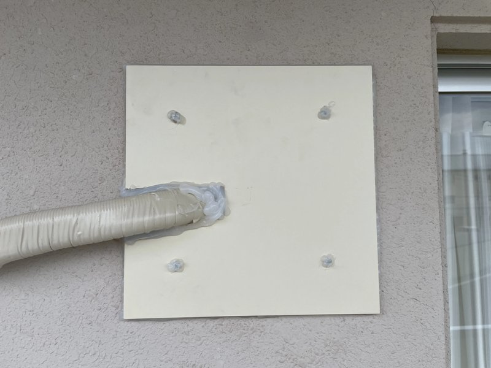
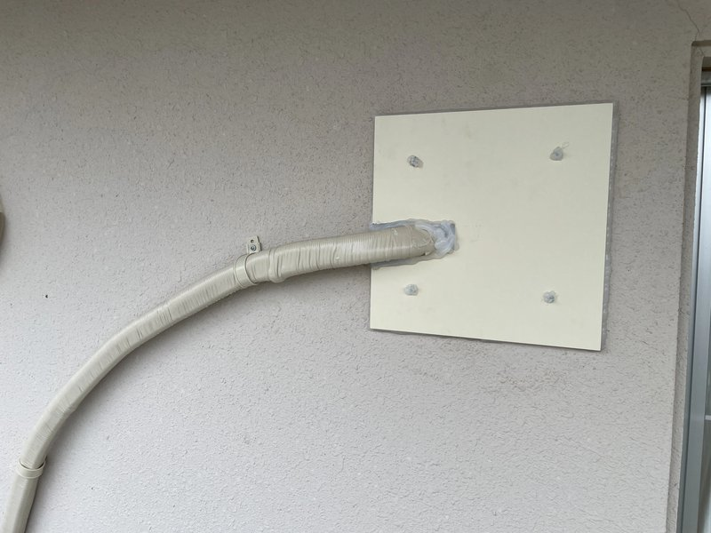
担当者コメント
担当スタッフ
今回のお客様は、エアコン本体をご自身で購入されており、取付工事のみのご依頼でした。市営住宅の団地ということで、まず同じ棟の近隣住戸でエアコンがどう設置されているかを確認してから施工方法を決定しました。
一番大変だったのは、既設の換気口の撤去です。コーキング材がびっちり入っていて、内壁側・外壁側ともにかなりしっかり固定されていました。引き抜くのに苦労しましたが、壁を傷つけないよう慎重に作業し、無事に撤去できました。
撤去した換気口の穴はエアコン配管より大きいため、白い木の板をノコギリで配管が通る形状に切り出し、穴をふさぐように取り付けました。配管周りはウレタンフォームとコーキングで気密・防水処理を施しています。室外機はベランダにプラブロックで設置し、全体的にきれいに収まりました。
北見市の他の施工事例
北見市でエアコン工事をご検討中ですか？
お見積り無料。エアコンの購入から取付・電源工事までワンストップ対応。
お客様支給品の取付工事も承ります。北見市全域に出張費無料。
受付時間: 9:00〜19:00（年中無休）